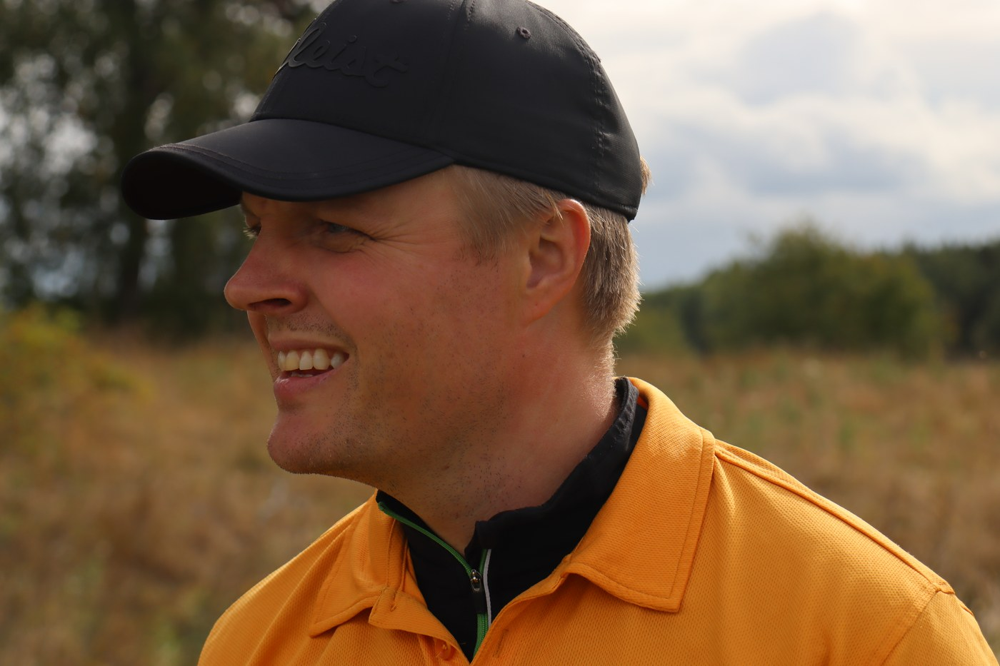

9 matches, 5.5 points and 3 Cup appearances. The numbers like BetterBalls best. Singles has been less forgiving.

Matches9
Points5.5
W–L–D4–2–3
The read
What the record says
9 matches, 5.5 points and 3 Cup appearances. The numbers like BetterBalls best. Singles has been less forgiving.
Best-performing regular partnership in the available record: Calle Dahlberg — 1 points from 1 shared matches. A recurring problem: against Martin Turner, the return is 1 points from 2 meetings.
Entry handicap: 19. Current MF handicap: 17.
Career story
The stretches that shaped the record
MF handicap journey16 low · 20 high
Entry 19; current 17.
To the 18th3 full-distance matches
1.5 points from matches recorded All Square, 1 & 0 or 2 & 0.
Best run5 matches unbeaten
2024–2025: 4.5 points without a defeat.
Hard yards3 matches without a win
2022–2022: 1 points across the run.
Five-match surge4.5 points from 5
2024–2025: the strongest five-match scoring stretch in the record.
Formats
Where the points come from
Format
Matches
Points
Pts/match
BetterBalls
6
4.5
0.75
Singles
3
1
0.33
Partnerships
Who makes the numbers better?
Partner
Matches
Points
Pts/match
Matte Eriksson
2
1.5
0.75
Calle Dahlberg
1
1
1.00
Erling Tysse
1
1
1.00
Janne Nordlander
1
0.5
0.50
Josh Gregory
1
0.5
0.50
Opponents
The familiar faces on the other side
Opponent
Meetings
Points
Pts/match
Alex Scheepers
4
2.5
0.62
Ben Blackburn
3
2.5
0.83
Chris Kibbey
2
1.5
0.75
Martin Turner
2
1
0.50
Cameron Turner
2
1
0.50
Eddie Yeandle
1
0.5
0.50
Shaun Davey
1
1
1.00
Recent record
Latest Cup matches
Year
Format
Outcome
Points
2025
Singles
Alex Scheepers(0) beat Erik Malmsten(13) 3 & 1
0
2025
BetterBalls
Erik Malmsten(1)/Erling Tysse(8) beat Chris Kibbey(0)/Shaun Davey(1) 6 & 5
1
2025
BetterBalls
Ben Blackburn(9)/Martin Turner(5) vs Erik Malmsten(8)/Josh Gregory(0) finished All Square
0.5
2024
Singles
Erik Malmsten(1) beat Ben Blackburn(0) 6 & 5
1
2024
BetterBalls
Erik Malmsten(18)/Matte Eriksson(16) beat Alex Scheepers(0)/Ben Blackburn(15) 7 & 5
1
2024
BetterBalls
Calle Dahlberg(13)/Erik Malmsten(20) beat Alex Scheepers(0)/Cameron Turner(23) 4 & 3